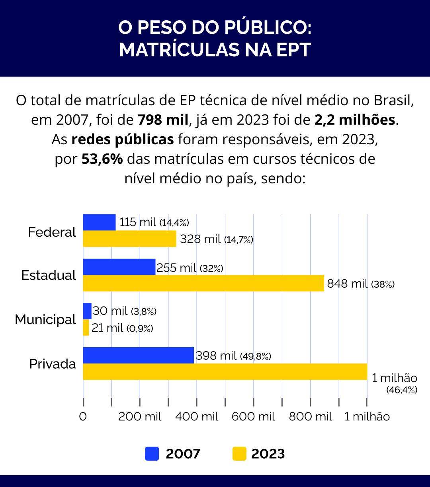
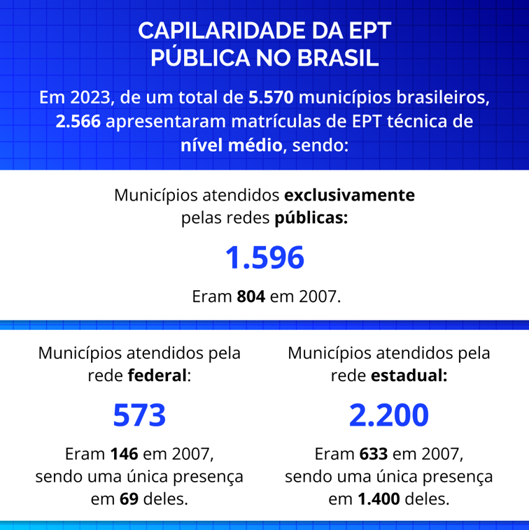
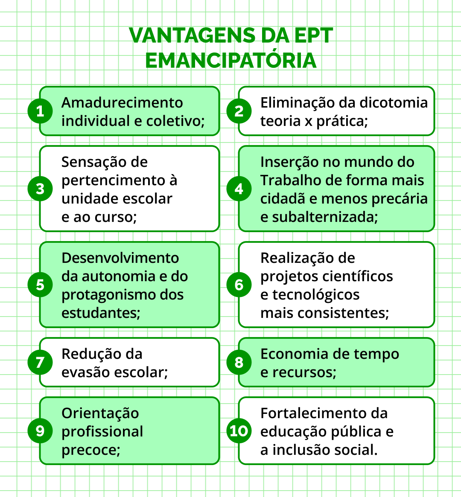

A expansão da EP integrada ao EM como elemento central da construção da Política Nacional de EPT
A decisão política de promover a expansão das redes públicas de Educação Profissional no Brasil (federais e estaduais), com oferta preponderante de cursos técnicos de nível médio e com ênfase na forma de articulação integrada em todo o território nacional foi, como dito anteriormente, o maior movimento de acumulação de capital cultural e simbólico do polo não hegemônico. Esse movimento resultou também na ampliação do capital social, inicialmente restrito pela distribuição territorial limitada.
A expansão das redes públicas se deu em momentos específicos, com “saltos” promovidos por indução, via fomento do Governo Federal. Mesmo o setor privado viveu um salto, impulsionado por recursos públicos, nos anos iniciais do Pronatec. Entretanto, a partir do estabelecimento das redes em muitos estados e da consolidação dos IFs, a expansão adquire “motor próprio”, alimentado pela demanda, pela interiorização e pela verticalização, com a criação de novos cursos em territórios e municípios que nunca tinham tido oferta de EPT. A capilaridade das redes públicas supera em muito a das redes privadas, tornando a instituição pública a única provedora de muitos municípios, bem como a maior ou única provedora de alguns cursos específicos, em particular aqueles ligados às demandas sociais.
Apesar das flutuações orçamentárias e das ações no sentido de limitar a autonomia pedagógica das instituições públicas, elas continuam sendo as principais provedoras de Educação Profissional no Brasil, como demonstram as informações sobre matrículas, obtidas das bases de dados do Censo Escolar INEP/MEC, entre os anos de 2007 e 2023, enumeradas no infográfico a seguir:

Título: O peso do público: matrículas na EPT
Fonte: Brasil (2007; 2008; 2009; 2010; 2011; 2012; 2013; 2014a; 2015; 2016; 2017; 2018; 2019; 2020; 2021a; 2022a; 2023a).
Elaboração: Prosa (2025i).
Observando o gráfico de matrículas nas diversas redes, verifica-se que as redes públicas apresentam crescimento praticamente constante, enquanto as redes privadas apresentam picos de oferta, diretamente relacionados com a injeção de recursos públicos ().
- As redes públicas têm foco na oferta de cursos com currículo integrado: Educação Profissional Integrada ao Ensino Médio (EPI ou EMI) e Educação Profissional Integrada à Educação de Jovens e Adultos (PROEJA ou EJA-EPT). As matrículas das redes públicas, em 2023, representaram quase a totalidade da EPT Integrada ao Ensino Médio (93,9%) e à EJA (92,2%);
- As matrículas de EPT Integrada ao Ensino Médio da rede federal representaram, em 2023, 27,5% do total de matrículas em cursos técnicos de nível médio na modalidade integrada, enquanto as estaduais, 65,2%;
- A rede federal apresentava, em 2023, 65,6% de matrículas de EPT Integrada ao Ensino Médio em relação ao total de matrículas federais. Já as redes estaduais apresentam 60,1% do total de matrículas estaduais;
- A rede federal apresentava, em 2023, 14,3% de matrículas de EPT integrada à EJA em relação ao total de matrículas desta modalidade. Já as redes estaduais totalizavam 77,4%;
- Embora não seja o seu foco, as redes públicas ainda representavam, em 2023, 22,6% das matrículas na forma de articulação concomitante e 32,7% na forma subsequente ao Ensino Médio;É importante ressaltar que a oferta integrada diminui a demanda pelas formas concomitante e subsequente, focos das redes privadas.
-
-
-

Título: Capilaridade da EPT pública no Brasil
Fonte: Brasil (2007; 2008; 2009; 2010; 2011; 2012; 2013; 2014a; 2015; 2016; 2017; 2018; 2019; 2020; 2021a; 2022a; 2023a).
Elaboração: Prosa (2025n).
Em capitais, grandes cidades e até municípios de porte médio existem unidades das várias redes, razão pela qual o número de municípios atendidos é menor que a soma de cada rede individualmente. A interiorização, ou seja, a presença da unidade escolar pública ofertante de EPT para além dos centros urbanos, é fator de atração de investimentos, melhoria da gestão pública e elevação do trabalho e da renda nos municípios onde está instalada e nos circunvizinhos. Dessa forma, esta presença também reduz a demanda por cursos de curta duração, outra especialidade das redes privadas.
Desafio para você complementar seu Memorial: estude os gráficos e as tabelas disponibilizadas e sinalize questões que os dados suscitam para além daqueles que já foram citados no texto anteriormente.
Evidentemente, esse crescimento acelerado trouxe novas questões: infraestrutura, gestão e corpo funcional, bem como sua formação e suas condições de trabalho, acolhimento e permanência a um público diverso cultural e educacionalmente, só para citar alguns exemplos. Nas redes estaduais, acrescenta-se a questão dos concursos públicos, central para a sua consolidação definitiva. Porém, são questões em fase de resolução, e sua própria existência demonstra a novidade e a vitalidade da expansão.
O Ensino Médio Integrado à Educação Profissional é uma forma de estruturação curricular que funde, de forma inequívoca, a formação geral do Ensino Médio com a qualificação técnica e profissional, fornecendo ao estudante, de forma interdisciplinar, bases científicas, tecnológicas e socioéticas. A integração curricular tem se mostrado a de maior efetividade social e de maior potencial para atingir a qualidade socialmente referenciada no âmbito da Educação Profissional técnica de nível médio e da Educação de Jovens e Adultos.
Ao possibilitar a educação integral e a perspectiva emancipatória, o curso técnico com currículo integrado viabiliza a eliminação da dicotomia teoria x prática, indo além por incluir as implicações éticas e sociais da ciência e da tecnologia. Esta é uma premissa de inserção no mundo do Trabalho mais cidadã e menos precária e subalternizada. O tempo de permanência maior na escola (3 a 4 anos) permite a realização de projetos científicos e tecnológicos mais consistentes, envolvendo visitas técnicas, feiras e mostras e atividades de elaboração e intervenção social com base em tecnologias sociais, sem minimizar a importância das atividades artísticas e culturais e aquelas que envolvem linguagens, inclusive a corporal. A integração também significa economia de tempo e recursos, pois o Ensino Médio e o técnico são realizados a um só tempo, na mesma unidade escolar. Estas possibilidades podem ser potencializadas quando se adota o tempo integral (ampliação de carga horária diária).
Além disso, o currículo integrado possibilita a orientação profissional precoce, permite o amadurecimento individual e coletivo e potencializa o pertencimento em relação à unidade escolar e ao curso. Isso representa um auxílio não apenas para uma escolha mais consciente da carreira e um estímulo à continuidade dos estudos em cursos superiores relacionados (verticalização) como também contribui para a redução da evasão escolar. Processo análogo é aplicável aos docentes e funcionários, aos pais e mães e aos agentes sociais do território onde se encontra a unidade escolar. Finalmente, como resultado do desenvolvimento da autonomia e do protagonismo dos estudantes adolescentes, jovens e adultos, há o fortalecimento da educação pública e a inclusão social.

Título: Vantagens da EPT emancipatória
Fonte: Prosa (2025q).
Não se pode afirmar que as formas de articulação concomitante e subsequente ao Ensino Médio não possibilitem os elementos elencados, porém estas formas encontram dificuldades intrínsecas. A concomitante, por conta das diferenças de concepção e metodologia em relação à das redes, que praticamente impedem a integração curricular; e a subsequente, tanto pelo tempo de permanência menor (3 a 4 semestres) quanto pela dificuldade de garantir a articulação entre teoria e prática e a relação ciência-tecnologia-sociedade, já que as disciplinas do Ensino Médio já aconteceram. Ao mesmo tempo, os desafios (infraestrutura – laboratórios, equipamentos e provimento e capacitação de docentes e funcionários), são comuns às três formas de articulação curricular.
Apesar de não serem homogêneas, as experiências com currículo integrado exitosas sinalizam para a possibilidade de uma educação integral, na qual não são minimizadas nem a formação geral propedêutica, nem a formação técnica; nem a teoria, nem a prática; nem as ciências humanas, linguagem e artes, nem as ciências exatas e naturais. Embora as evidências sejam mais que comprobatórias para o reconhecimento da forma de articulação integrada como núcleo central da Política Nacional de EPT, os interesses privados tendem a estimular outras formas de articulação. Por conta disso, estudar, atuar e defender o currículo integrado é defender a escola pública na perspectiva emancipatória e do desenvolvimento local, sendo os trabalhadores em educação e estudantes os protagonistas nesse espaço de lutas, precisando forjar alianças com os agentes sociais de seu entorno e de seu território.